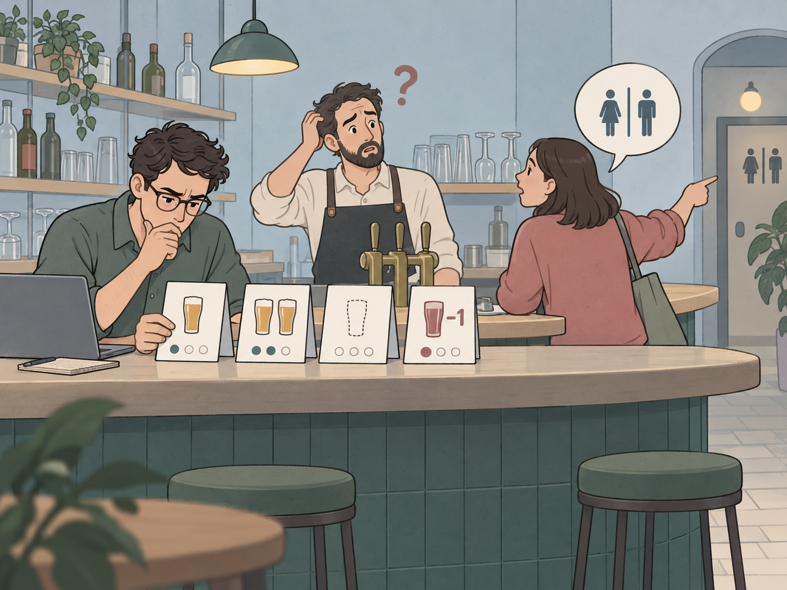
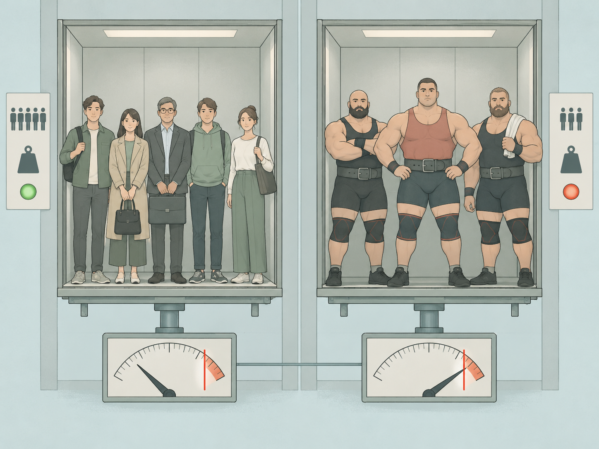
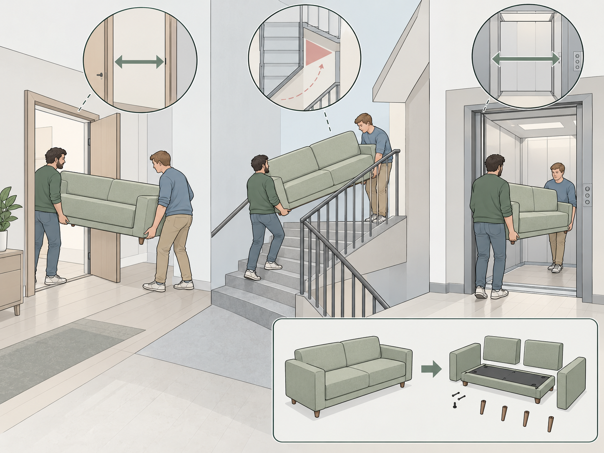

Тестирование: от «кажется, работает» к проверке
Как тестировщик задаёт вопросы системе и обосновывает вывод.
Заказ создался. Можно выпускать?
Как тестировщик задаёт вопросы системе и обосновывает вывод.
Заказ создался. Можно выпускать?

Он проверил один бокал, два, пустой и даже «−1».
Но первый посетитель спрашивает, где туалет.
Отдельные операции могут работать по правилу, а весь путь всё равно мешает человеку достичь цели.
«Проверить, работает ли».
Выбрать вопрос и случай для проверки.
Обосновать вывод и сообщить о расхождении.
| Этап работы | Вклад тестировщика |
|---|---|
| Уточняют задачу | Разбирается в контексте, замечает неясные правила. |
| Проектируют и пишут код | Продумывает важные проверки, данные и окружение. |
| Проверяют изменение | Исследует поведение и фиксирует расхождения. |
| Исправляют и выпускают | Проверяет исправление, сообщает о проверенном и рисках. |
Кто может отменить заказ? На каких этапах?
Что происходит с оплатой и курьером?
Тестировщик помогает сделать правило проверяемым.
Входные данные и действия. Поведение системы. Ответ и новое состояние.
Чёрный ящик: внутреннее устройство нам неизвестно.
Серый ящик: часть устройства или данных нам известна.

Не более 5 человек.
Не более 400 кг.
Пять обычных пассажиров и трое стронгменов проверяют разные сочетания условий.
Количество товара: целое число от 1 до доступного остатка.
Допустимые: 1 ... остаток.
Рядом с границами: −1, 0 и остаток + 1.
Проверяем границы и соседние значения, затем смотрим на состояние корзины.

Он помещается в комнате.
Но пройдёт ли в дверь, повернёт ли на лестничной площадке и войдёт ли в лифт?
| Случай | Пример количества в корзине |
|---|---|
| Обычный | 3 товара при достаточном остатке. |
| Граничный | 1 товар или всё доступное количество. |
| За границей | 0, −1 или больше остатка. |
| Сочетание | Повтор запроса при остатке в 1 товар. |
| Вопрос | Вариант ответа |
|---|---|
| Где проверяем? | Модуль, интеграция, система, приёмка. |
| Как выполняем? | Вручную или автоматически. |
| Что исследуем? | Функцию, удобство, совместимость, безопасность, скорость. |
Все сочетания не перебрать. Выбираем важные операции, изменённые места и дорогие ошибки.
В Уфе поиск аренды коммерческой недвижимости вернул всего 12 объектов.
Что мы пока знаем? Чего ещё не знаем?
В выдаче 12 объектов.
Кажется, должно быть больше.
Какие объекты пропущены и почему они должны попасть в выдачу?
Правило: количество от 1 до доступного остатка
Данные: количество = −1
Ожидаю: отказ в запросе
После отказа: корзина и цена не меняютсяПосле действия сравните ответ и состояние системы с ожиданием.
Сообщение о проблеме должно помочь другому человеку её увидеть.
Проверки основаны на правилах?
Какие границы и сочетания включены?
Что запускалось и что осталось непроверенным?
Тестировщик понимает правила, выбирает случаи, наблюдает результат и сообщает, что действительно проверено.
В ЛР №8 вы исследуете службу доставки и напишете баг-репорты.
Ценность не в числе нажатий. Ценность в обоснованном выводе.